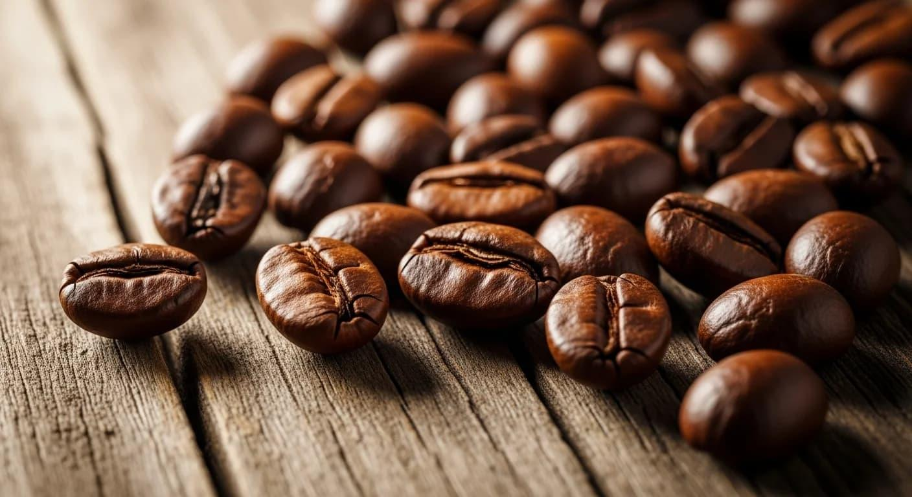
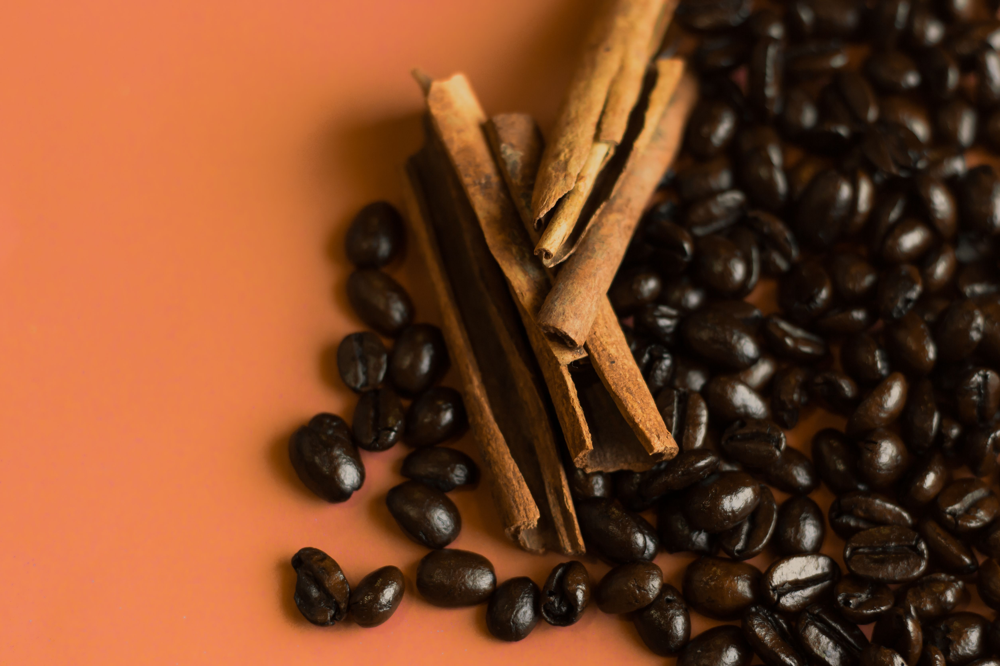
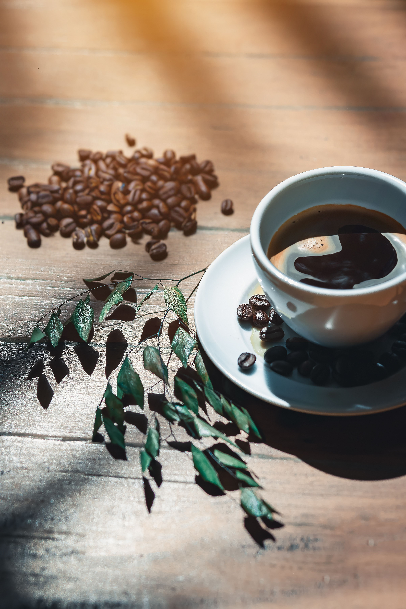
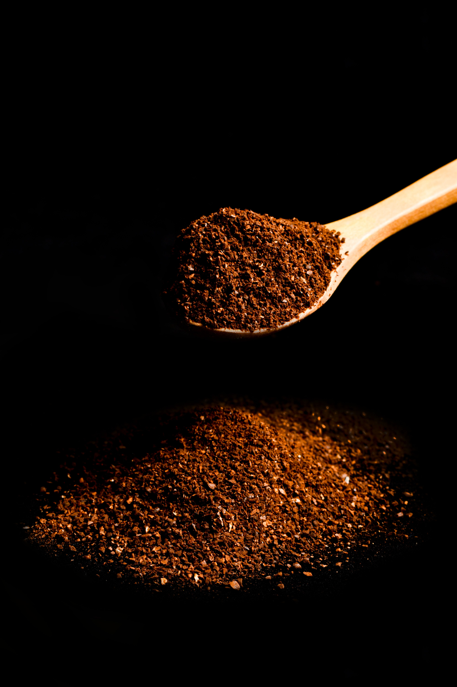
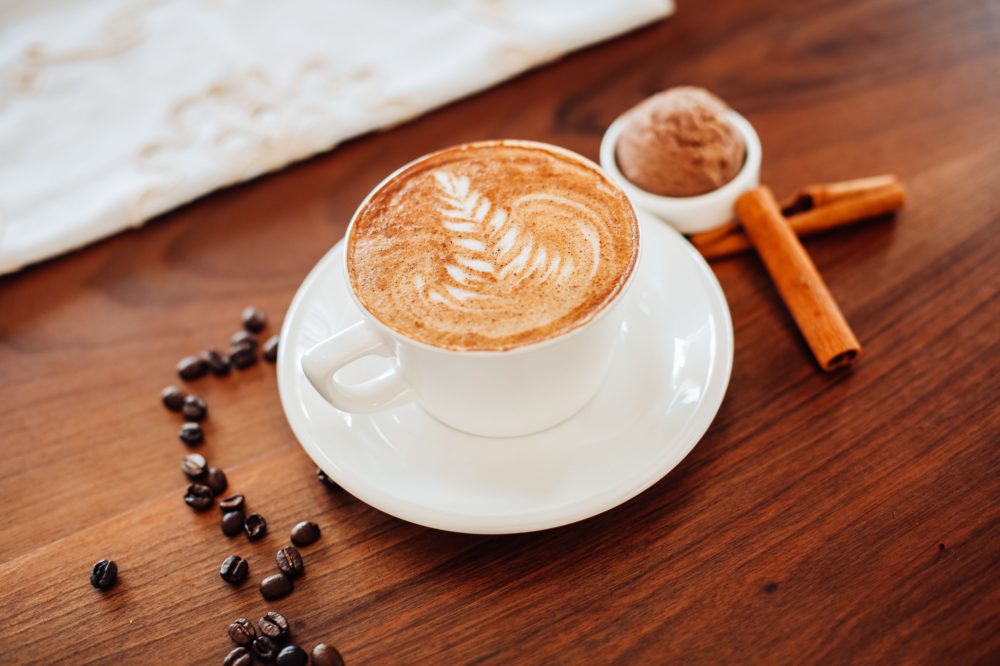
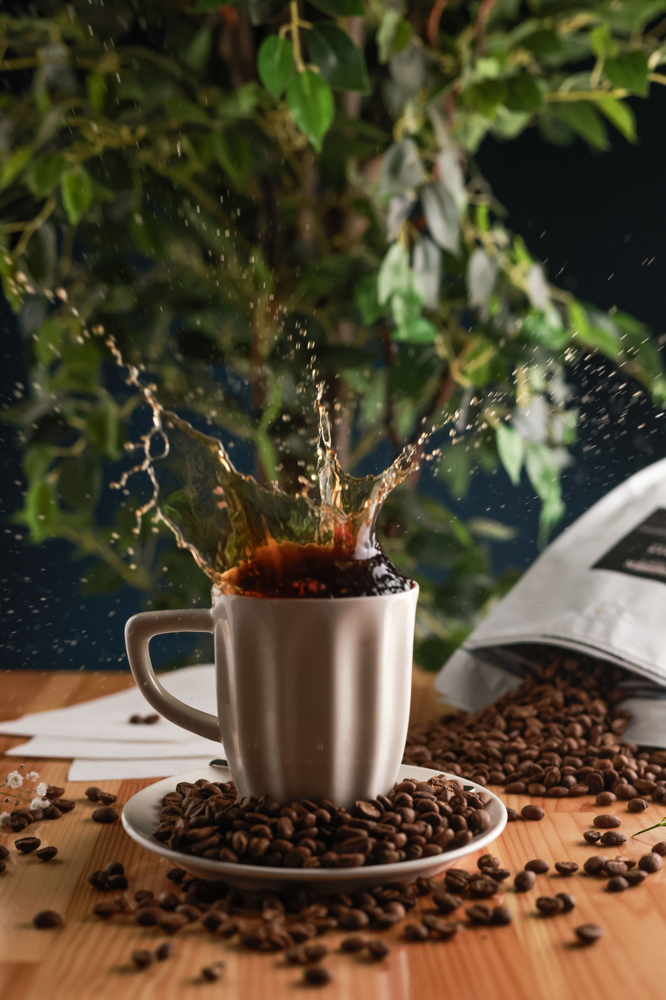

Conheça nossa seleção
Encontre o café perfeito para o seu momento.

Café Serra Dourada
Café especial em grãos, com notas de chocolate e baixa acidez.
R$ 32,90
Café Montanha Alta
Grãos selecionados, com aroma intenso e notas de caramelo.
R$ 38,90
Café Vale Verde
Café em grãos com sabor equilibrado e notas frutadas.
R$ 35,90
Café Aroma Clássico
Café moído tradicional, perfeito para o dia a dia.
R$ 24,90
Café Doce Serrano
Café moído com notas adocicadas e aroma marcante.
R$ 29,90
Café Reserva Especial
Café moído especial, com sabor intenso e finalização prolongada.
R$ 34,90